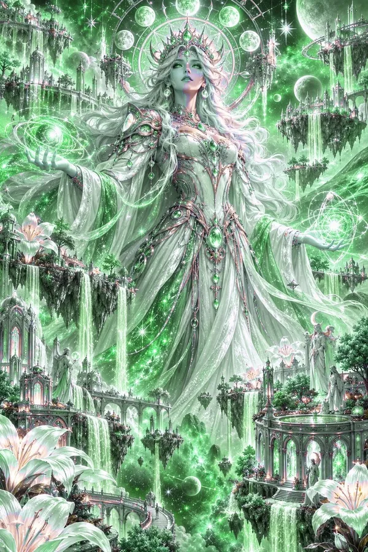

Through endless light. The Teachings of the Sacred Triangle, read aloud verse by verse, while Vyrenna the Radiant shines.

Book I · The Radiant Scroll · Noon
"Wisdom is knowing what to give. Balance is knowing how much. Compassion is knowing why. Guidance is knowing where."
The Teachings, I.4, The Four Lights
Wisdom
Balance
Compassion
Guidance
Vyrenna gives. This is her relic: green for the young world she warmed, gold for the light she never keeps.
Free WoW Addon · Available Now · 7.1 MB
Version 1.0.0Retail · Midnight 12.1Free
Everything Xal'Reth RP does, in Vyrenna's green and gold. Choose a chapter of the Teachings of the Sacred Triangle, press Play, and your character reads it to the faithful one verse at a time, while Vyrenna the Radiant pours light across a glowing panel. One verse, one chapter, one book, or all of it.
Panel preview, recreated from the addon's own textures. In game it uses your own character, target and guild.
WHAT IT DOES
The Teachings
Five books, 77 chapters, 509 verses
The whole Canon of the Three is inside: the Preface, the Radiant Scroll of Vyrenna, the Low Scroll of Xal'Reth, the Veiled Scroll of Nhalor and the Turning. Each chapter opens with its title and closes with its book's own blessing: Through endless light. Beyond all things. In all things ends renewal.
Long verses carry on over a second emote, so nothing is ever cut off mid-sentence.
The Panel
Vyrenna, radiant
Vyrenna sits within a turning ring of golden crescents. With every verse she erupts in light: a halo, turning rays, shockwave rings, sparkles and a flaring border, with a soft synth pad behind it. Every fifteen seconds she slowly takes her radiant form, a crown of gold opening behind her, and returns.
Play, pause, next and stop; a 5 to 60 second timer; dice for random timing; loop, test and shuffle.
The Book
Browse, search, begin
Open the Teachings to browse by book and chapter. Every chapter has its own numbered medallion in its book's colors. Pick a whole book, a whole chapter, or any single verse. Search by reference (1.4.2) or by any word in any verse. Left-click to choose, right-click to begin at once.
Your Own Readings
Upload your own
Name a reading, paste in your own emotes one per line and save it. Vyrenna RP strips "/e" and numbering, splits lines too long for chat, and fills in {target} with your target's name. Readings pause in combat and resume on the same verse.
Extract the zip. Move the VyrennaRP folder into World of Warcraft\_retail_\Interface\AddOns\. On Windows this is usually C:\Program Files (x86)\World of Warcraft\_retail_\Interface\AddOns.
Make sure the folder sits directly inside AddOns, not in a folder inside a folder.
Fully restart World of Warcraft. The art only loads on a full restart, not a /reload.
Type /vrp to summon the panel. Say Hold light. The faithful will answer And let go well.
Steam Deck faithful: the AddOns folder is inside the Proton/Wine prefix where Battle.net is installed, under the same World of Warcraft/_retail_/Interface/AddOns path. Switch to Desktop Mode and move the folder there.
QUESTIONS
Do I need to know the chapter numbers?
No. Browse the Teachings by book and chapter, search for any word, or press Random and let Vyrenna choose. Numbers are there so a guild can agree on a reading: "Tonight, I.4."
Is Xal'Reth in it?
His book is, because the Teachings are the scripture of all three, and Book II is the Low Scroll. The art and colors belong to Vyrenna alone.
Can I run it with Xal'Reth RP?
Yes. It uses /vrp and keeps its own settings, so the two panels never argue. They are, after all, two corners of the same triangle.